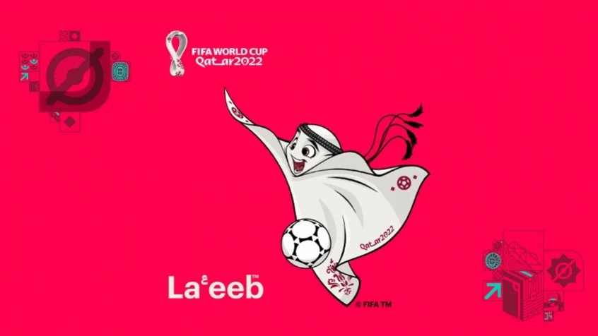

copa do mundo de 2022
Turma:1° G - Número: 14 e 11
A Copa do Mundo FIFA de 2022 ou Campeonato Mundial de Futebol FIFA de 2022 será a vigésima segunda edição deste evento esportivo, um torneio internacional de futebol masculino organizado pela Federação Internacional de Futebol, que ocorrerá no Catar.
